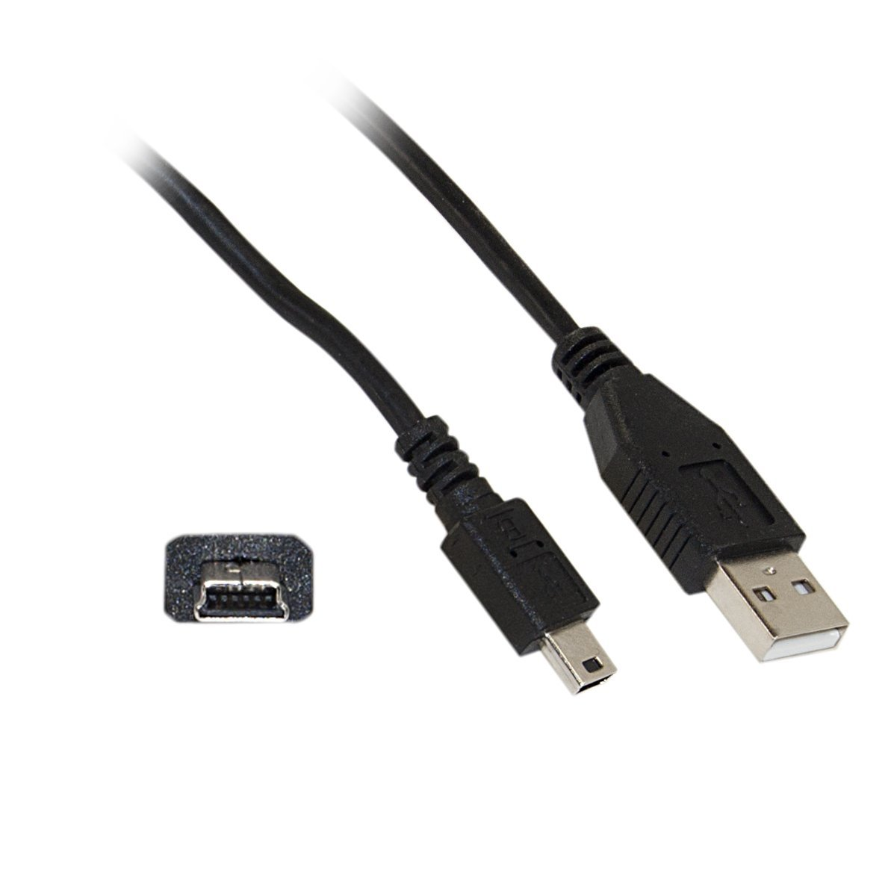

Robotics Merit Badge Class Reference
Table of Contents
1 Introduction
This document contains useful information for the Troop 675 Irvine Robotics Merit Badge class.
Copyright © 2015 Maurice Ling
2 Items to bring for each Session
- Laptop/computer with Android IDE installed. (see Section: 3)
- Laptop power adapter/cable.
- Pen/pencil for taking notes
- Robotics Notebook, Workbook and Kit (distributed in first class)
- Blue Card signed by Scoutmaster
- USB -A to mini-B USB cable. These are commonly used to connect cameras or other devices to computers. You should be able to find these lying around in a drawer somewhere. There are different types of mini-B cables. The kind you need looks like:

Figure 1: USB-A to Mini-B Cable
3 Computer Requirements
You need a computer (Mac, Windows PC, or Linux) that can run the Arduino IDE (Interactive Development Environment). The computer must have an available USB port. Sorry, no tablets or smart phones.
If you have extra time and an Android phone/tablet, it is possible to program your Arduino with an Android tablet. Not recommended for your primary development environment though! Software Installation
These steps may require Administrator privileges and software installation skills. Get an adult to assist you if you are unsure of what to do. If you are stuck, make sure you at least download the packages on to your computer for the first class.
3.1 Arduino IDE
Download and install the Arduino IDE. For this class, I will be using version 1.0.6 of the IDE. There are newer Beta versions available (1.5 and 1.6) which you are welcome to try (at your own risk!).
Note: Linux users can install the Arduino IDE via their package manager.
3.1.1 Arduino Board Configuration
Configure your Arduino IDE to work with our board under the Tools Menu:
- Arduino Pro or Pro Mini
- ATmega 328 (3.3V, 8Mhz)
3.1.2 Serial Port Configuration
Select the Serial port to use for connecting the Arduino Board. On Windows this is usually the COM3 port.
On the Mac, a properly installed driver will show /dev/cu.SLABUSBtoUART in the Tools->port menu
If the port does not show up in the menu, follow the USB Driver installation section below for your computer.
3.2 USB Driver
To allow your computer to communicate to the Arduino board, install the USB Driver for your computer. Download the driver package for your computer and install it on your computer following the instructions for your particular type of computer.
3.2.1 Mac OSX
Click on the zip file which you downloaded and install the dmg file (google instructions).
A properly installed driver will show /dev/cu.SLABUSBtoUART in the Tools->port menu
3.2.2 Windows PC
Extract the zip file which you downloaded and click on the right installer (x86 or x64) for your computer. To determine if your PC is 32-bit (x86) or 64-bit (x64), follow the instructions provided by Microsoft.
3.3 Github Account and Setup
Github is a source code control tool that will allow you to retrieve my examples in class and for me to look at code that you’ve developed. It will also help you during development by allowing you to check point your code.
Note: For “git” commands mentioned below, right click on the RoboticsMB project in the github client and select “Open in Git shell” (for Windows). This will launch a terminal in the RoboticsMB directory where you can execute the “git” commands.
Note: After you synchronize, you may need to restart the Arduino IDE to be able to see any new files.
- Install the github client software on your computer
(see Section: 3.3.1.)
- Run the github client and create an account.
- Email your github user ID to me.
- In your browser, go to https://github.com/mcli/RoboticsMB and click “fork” on the upper right hand side. Creating a fork copies the RoboticsMB project into your own github account that you can work with.
- In the github client, clone your forked project into a directory and make that the sketch location the Preferences sketchbook location field in the Arduino IDE.
- Configure my RoboticsMB to be the upstream project (from your
command line prompt, git shell, or terminal). In the RoboticsMB
project directory created when you cloned your project, type:
git remote add upstream https://github.com/mcli/RoboticsMB.git
3.3.1 Github Client Software Installation
3.3.2 Synchronizing with the Upstream Github Project
To synchronize with the upstream project if there are any changes, perform the following commands in the RoboticsMB project directory:
- Retrieve any upstream changes
git fetch upstream
- Make sure you're on your local master branch
git checkout master
- Merge your local master with the upstream changes
git merge upstream/master
Note: After you synchronize, you may need to restart the Arduino IDE to be able to see any new program files.
4 Other Items You Will Need
Here are additional items you will need:
- Blue Card with the Scoutmaster’s signature.
- Small Phillips head screw driver (not flat head)
- AAA NiMH battery charger (the kit you will receive will have 4 AAA NiMH batteries).
- A small work area at home you can use to work on your robot. NOT on the floor!
- Sony or universal IR remote (optional)
- Multimeter (optional)